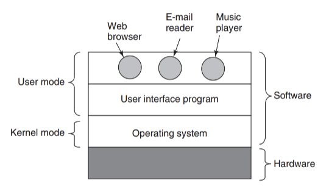

What is an operating system?
An operating system is the main program that controls a computer's hardware and lets other programs run. It has full control of the hardware, while regular apps are limited in what they can do.

What it does
- CPU: fetches instructions from memory and executes them.
- Memory: keeps programs from interfering with one another.
- Storage: lets programs read and write files on any device.
- I/O devices: talks to keyboards, disks, and USB devices.
Sources
- Tanenbaum, A. S., & Bos, H. (2014). Modern Operating Systems (4th ed.). Pearson.
- Operating system (Wikipedia)